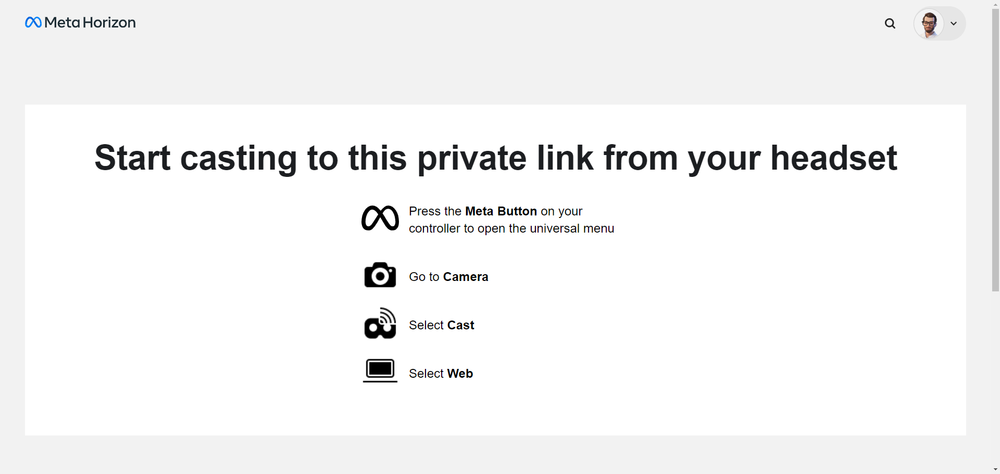
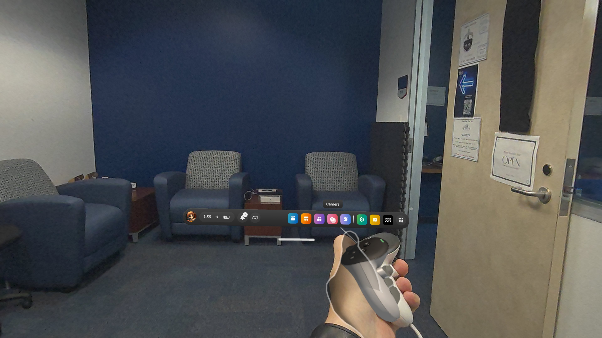
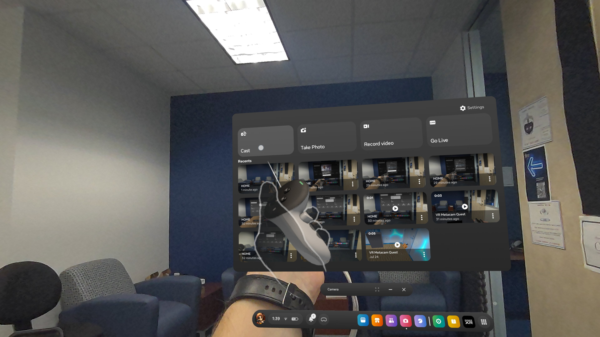
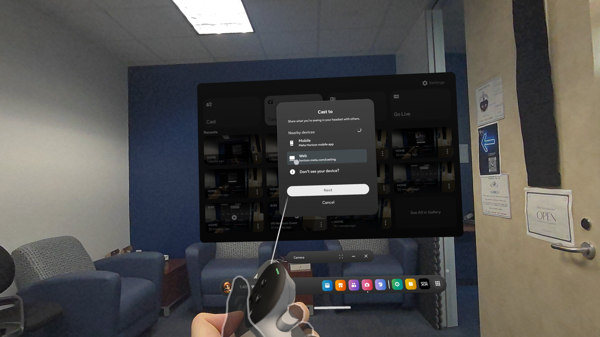
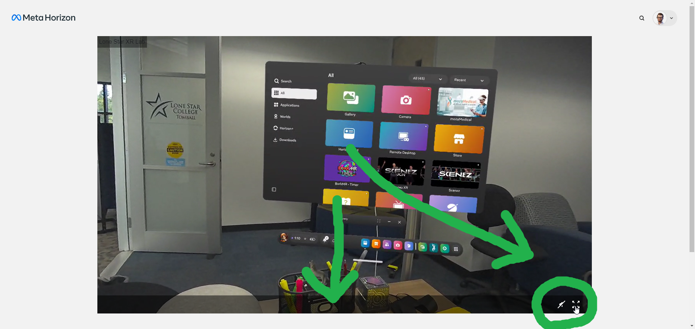

📡 Casting a Meta Quest Headset to a Vibe Smart Whiteboard
Supports Meta Quest 2, Quest Pro, and Quest 3
XR Lab — Lone Star College
📶 1. Connect Both Devices to the Same Network
Ensure both the Meta Quest headset and the Vibe board are on LSCS‑VR Wi‑Fi.
On the Vibe board: Wi‑Fi settings → Known Networks → LSCS‑VR.
🌐 2. Open Casting Page on the Vibe Board
The casting page is already saved on the Vibe board.
Open the Web Browser and select the bookmark:
horizon.meta.com/casting

You should see this screen — leave it open.
🎮 3. Start Casting from the Headset
- Put on your Meta Quest headset.
-
Press the Meta button
-
Select the Camera app at the bottom menu.

-
Choose Cast.

-
Select the Web from the list.

🖥️ 4. Final Step on the Vibe Board
Once the feed starts, return to the Vibe board browser and click Full Screen for the best viewing experience.

💡 Tips & Troubleshooting
- Board not showing up in headset? Confirm both devices are on LSCS‑VR.
- Video lagging? Close other apps on the Vibe board.
- Still not working? As every IT pro says: try turning both the headset and the Vibe board off and back on again 😅.
⚡ All Set! Your Meta Quest is now casting to the Vibe Smart Whiteboard.